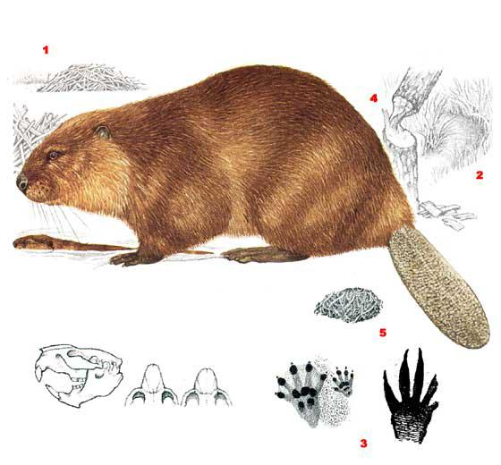
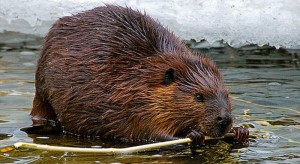
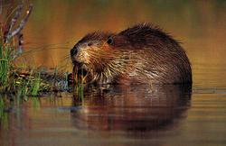

Самым крупным и, пожалуй, одним из самых известных и популярных, грызуном северного полушария являются бобры. Они оставили заметный след в фольклоре практически любого народа, на территории которого обитали. И дело не только в важном промысловом значении бобров — как источника ценного меха и лечебной бобровой струи. Эти грызуны, прежде всего, поражали своей способностью возводить немаленькие даже по человеческим меркам сооружения — дамбы и хатки. Поэтому у многих народов бобры прочно ассоциируются с работягами — строителями, плотниками. Мало кто из представителей фауны мог пользоваться такой популярностью, как бобр. Он является героем народных песен, сказок, его обожествляли индейские племена и жители севера Евразии. Начиная с древних времен по XX в. он снабжал человека одеждой, пищей и легендарным лечебным средством — бобровой струей. Уже на заре человеческой культуры бобр был предметом особого почитания. В свою очередь, по Уоллу, есть основания думать, что самые старые письменные сведения о бобре, точнее о бобровой струе, содержатся в папирусах древних египтян, т. е. им значительно более 3000 лет. Бобровую струю в качестве лекарства очень высоко ценили в Древней Греции — около 2400 лет тому назад. Одно из последних руководств, содержащих рецепты и указания по применению этого медикамента, опубликовано в начале XX в... Есть сведения об использовании препаратов бобровой струи в нынешней практической медицине.
В районах, где сумма годовых осадков превосходит испарение, человек стремится по возможности быстрее осушить крупные массивы сельскохозяйственных и лесных угодий. Кроме того, современная агротехнология требует вносить всё больше и больше удобрений. В том числе и минеральных. В свою очередь, попадание загрязняющих веществ в речную сеть вызывает усиленное обогащение вод питательными веществами, в основном фосфором и азотом, и водоемы буйно зарастают. Процесс из-за недостатка первичных консументов непрерывно усиливается. Этому способствуют недостатки технических систем очистных сооружений, халатное отношение к своим обязанностям и даже экологическая неграмотность обслуживающего персонала. В итоге резко сокращаются естественные рыбные богатства, живописные реки превращаются в зловонные сточные канавы, ландшафты теряют рекреационные качества, беднеет растительность и опустошается животный мир.
С этой позиции, в ареале своего обитания, бобры играют большую роль в создании и поддержании благоприятной экологической обстановки. Бобровые жилища — как жилые, так и брошенные — обеспечивают укрытием других амфибионтов; бобровые водоемы служат гнездовьем водоплавающей птицы, а сваленные деревья привлекают копытных.
Бобровые угодья — это те самые мокрые ландшафты, которые в последние годы получили широкое признание среди экологов густонаселенных и индустриально развитых стран. Такие угодья обладают высоким потенциалом обмена энергии, они вносят крупный вклад в улучшение здоровья окружающей среды. Это является основной причиной, почему нам нужен бобр и необходима его экологическая ниша. Запруживание рек и ручьев бобрами в сухих лесах приводит к насыщению почвы влагой, что заметно улучшает рост деревьев. Присутствие бобров благотворно отражается на жизни многих обитателей леса, особенно выхухоли, норки, выдры и водоплавающих птиц. Кроме того, в результате их деятельности повышается продуктивность водоемов, очищается вода, больше становится рыбы. Вред, приносимый бобрами лесному хозяйству, обычно невелик, поскольку они валят почти исключительно молодые деревья малоценных пород, чаще всего осину.
К сожалению, ценность бобров сослужила им плохую службу: к началу XIX в. на территории Старого, а к началу XX в. и Нового света бобровые ресурсы практически полностью были исчерпаны. Уничтожение мировых бобровых ресурсов и потеря его вековой экологической ниши является одной из самых печальных страниц истории взаимоотношений человека с окружающей средой. Этот огромный ущерб был вызван необдуманными действиями человека. Исчезновение бобров повлекло за собой разрушение водного режима, опустошение ландшафта и заставило самого человека покинуть значительные территории безводных, обедненных земель. Лишь в последние десятилетия человек начал осознавать и по возможности исправлять некоторые ошибки прошлого. Активно проводятся мероприятия по восстановлению популяции диких бобров.